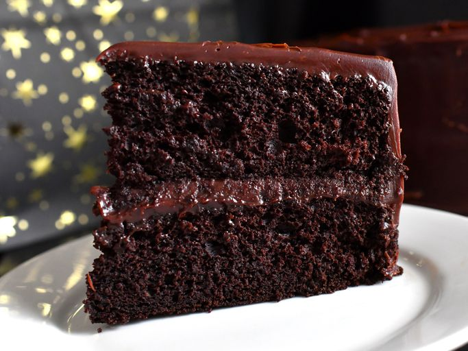

Stout Cake
A rich chocolate cake made with stout beer and topped with chocolate caramel frosting.
View Recipe →Welcome to Odin Recipes! Explore our collection of carefully crafted recipes that bring joy to your kitchen.
A rich chocolate cake made with stout beer and topped with chocolate caramel frosting.
View Recipe →